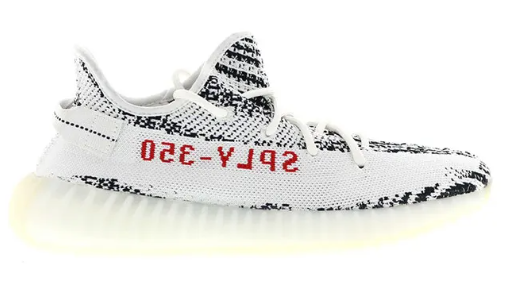

Kanye West y su sueño Yeezy
Kanye West se ve así mismo como un hombre del Renacimiento, alguien que puede hacer de todo y todo bien. Y aunque el mundo muchas veces se ha reído de él –algunas veces con crueldad- el rapero de Chicago ha demostrado que su talento es abundante y poliédrico. Y no solo en la música, sino también en el diseño de zapatillas. O mejor dicho, especialmente. Porque Ye se ha convertido en el artista que más éxito ha tenido al vincular su nombre a una colección de sneakers. No es Michael Jordan, pero no le va mal.
Kanye West fichó por adidas en 2013, tras salir escaldado de Nike. Sí, el artista había diseñado unas cuentas zapatillas con la marca del swoosh, y algunas de ellas se venden ahora mismo por miles de dólares en el mercado secundario. Las ventas de sus modelos con Nike fueron absolutamente satisfactorias. Todas sus sneakers se agotaron en minutos y se convirtieron en objetos de culto para los sneakerheads más avezados, la empresa con sede en Oregon no se plegó a las demandas de Ye: él quería un porcentaje de cada zapatilla vendida.
Desencantado con la negativa de Nike, saltó del barco y se subió al de la competencia. adidas sí que le garantizó su tan deseada prima -se habla que ronda el 5% de cada venta-, pero la cosa tardó en arrancar. Aunque el contrato de colaboración se firmó en 2013, el primer modelo que se puso a la venta fue Yeezy Boost 750, que llegó a las tiendas en 2015. La expectativa era enorme, y como no podía ser de otra manera todos los pares desaparecieron en segundos
Pero el gran bombazo llegó con el segundo par que Kanye West firmó junto a la marca alemana. El número 350 también se lanzó en 2015 y desde que adidas mostró los primeros diseños de la zapatilla la locura se desató. Tanto, que los compradores acampaban en las aceras de las tiendas días antes del lanzamiento.
La parte superior de este modelo también estaba fabricado con un material de lo más avanzado, el Primeknit, que hasta la fecha había sido utilizado en zapatillas deportivas como las de running, pero que ahora iba a estar al servicio del estilo más casual. La parte superior de las Yeezy Boost 350 se teje de una sola vez, en una sola pieza, que luego se une a la suela.
Pocos meses después, en febrero de 2016, Kanye West enseñó su colección Yeezy Season 3 en el Madison Square Garden y allí se pudieron ver por primera vez la segunda generación de las Yeezy Boost 350. Sin embargo, el primer modelo de las V2 tardaría bastante más en llegar alas tiendas: en septiembre se puso a la venta el primer modelo, con el color ‘Beluga’ y una llamativa franja naranja lateral.
A partir de ahí, con una cadencia de unos dos meses, se fueron poniendo a la venta nuevos colores de Yeezy Boost 350 V2. Algunos de los más populares fueron ‘Zebra’, ‘Triple White’ o el fosforescente de las Semi-Frozen Yellow.